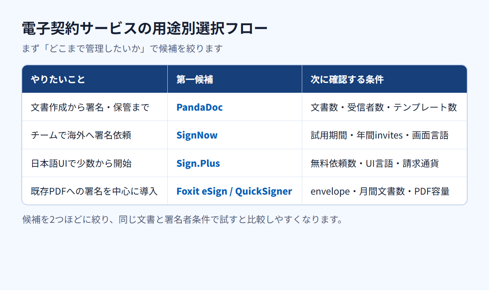
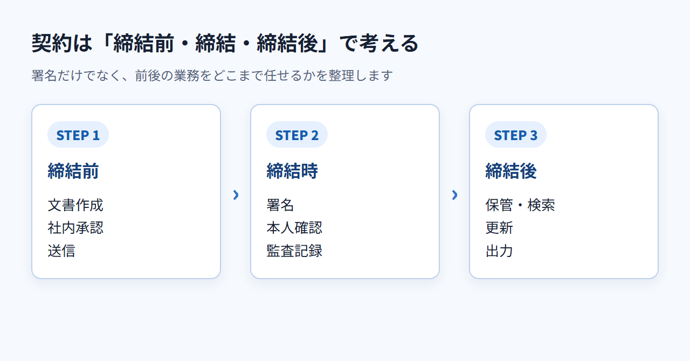
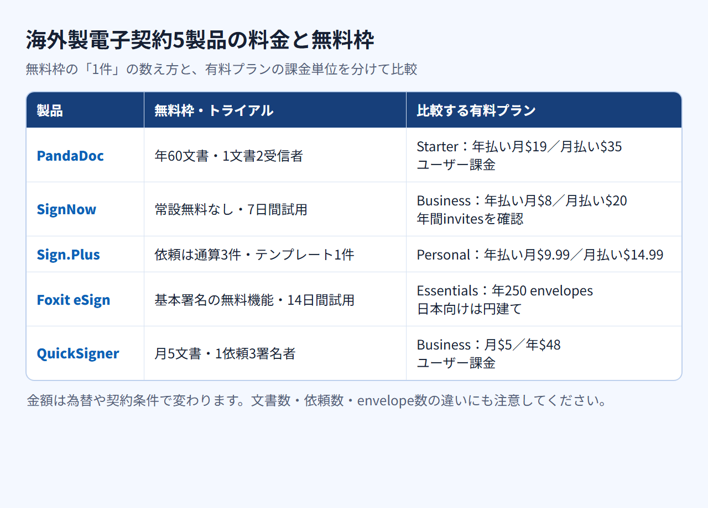

電子契約サービス比較｜海外製おすすめ5選と料金・日本語対応の選び方
電子契約サービスには、契約書の作成から保管まで扱う製品と、完成したPDFへの署名を中心にする製品があります。この記事では、海外製のPandaDoc、SignNow、Sign.Plus、Foxit eSign、QuickSignerを用途別に比較します。国内市場全体の人気順を示す記事ではありません。
結論：契約書送付・海外取引・PDF署名で候補を分ける
文書作成から署名・保管まで必要ならPandaDoc、署名依頼を中心に選ぶならSignNowかSign.Plus、PDF業務の延長ならFoxit eSign、少数文書から試すならQuickSignerが候補です。 最初に「どこまで管理したいか」を決めると、比較する製品を2つ程度に減らせます。

契約文書の作成から署名までまとめたい場合
- 用途：提案書や契約文書を作り、そのまま署名依頼まで進める
- 第一候補：PandaDoc
- 次に確認する条件：年間の文書数、1文書あたりの受信者数、テンプレート数
無料枠から始める場合は、年間60文書、1文書あたり受信者2人、テンプレート5件で実際の送付量をまかなえるかを確認します。
海外の取引先へ署名を依頼したい場合
- 用途：複数人で署名依頼を送り、チームで運用する
- 第一候補：SignNow
- 次に確認する条件：7日間の試用期間、年間の署名依頼数、相手側の画面言語
airSlateの製品群のうち、ここで確認するのは電子署名製品のSignNowです。署名依頼枠は有料ユーザー1人あたり年100 invitesで、アカウント内で共有され、超過分は追加課金です。
- 用途：日本語の料金情報を見ながら少数の依頼から始める
- 第一候補：Sign.Plus
- 次に確認する条件：無料枠の通算依頼数、製品内UIの言語、請求通貨
Sign.Plusは日本語の料金ページに加え、Web・iOS・Androidの製品内UIでも日本語を選べます。日本語での有人サポートについては公式の案内がありません。
PDFへの署名を小さく始めたい場合
- 用途：既存のPDF業務を起点に電子署名を導入する
- 第一候補：Foxit eSign
- 次に確認する条件：年間envelope数、必要ライセンス数、アプリ内の日本語範囲
日本向けの円建てページには、JCBを含む国際ブランドが掲示されています。ただし、カードの発行会社や決済審査によっては利用できない場合があります。Essentialsの年間250 envelopesとあわせて、購入画面で確認します。
- 用途：月数件のPDF署名を費用をかけずに試す
- 第一候補：QuickSigner
- 次に確認する条件：月間文書数、署名者数、PDF容量
無料枠は月5文書までなので、継続利用する件数が収まるかを先に数えておきます。
電子契約サービスとPDF署名ツールは管理範囲が違う
署名機能に加えて、文書作成、社内承認、本人確認、監査記録、保管・検索まで必要かを先に決めます。 契約業務全体を任せたい会社と、完成したPDFへ署名できればよい会社では、必要な製品が異なります。

電子契約は締結前後の業務まで含めて考える
契約業務は、次の工程に分けて必要な範囲を洗い出します。
- 締結前：文書作成、社内承認、送信
- 締結時：署名、本人確認、監査記録
- 締結後：保管、検索、更新、出力
PandaDocは文書作成、テンプレート、署名依頼、文書保管までを一つの製品で扱えます。SignNowは署名依頼とテンプレート、Sign.Plusは署名依頼とテンプレートを中心に比較する製品です。社内承認、本人確認、契約更新まで一体化したい場合は、必要な機能が検討中のプランに含まれるかを別途確認します。
PDF署名は文書単位の署名を中心に考える
Foxit eSignはenvelope単位の署名依頼と監査記録、QuickSignerはPDFの署名依頼とテンプレートが中心です。QuickSignerのProfessionalではAPIも利用できます。どちらも署名者はアカウントを作らずに署名できます。検索、期限更新、社内承認まで一体化するなら、これらが契約プランに含まれるかを確認し、足りない工程は既存の文書管理で補います。
電子署名の法的効力は要件と運用を分けて確認する
海外製という理由だけで可否は決まりません。電子署名法上の要件、契約の種類、本人確認、権限、監査記録、社内規程を切り分け、重要な契約は法務担当者や専門家へ確認します。
電子契約サービスの選び方は5項目
月額に加え、管理範囲、送信者・署名者の条件、日本語、総額、解約後の扱いを同じ順で確認します。 5項目を先に固定しておけば、製品ごとの説明に引っ張られずに比べられます。
契約書作成から保管までの必要範囲を決める
- 必須条件：作成、承認、署名、監査記録、保管、検索、出力の必要範囲
- 妥協できる条件：既存の文書管理で代替できる工程
- 確認する場所：プラン別機能と文書の保存・出力案内
送信者と署名者の操作・登録条件を分けて見る
- 必須条件：送信者の席数と署名者の登録・費用・本人確認
- 妥協できる条件：社内だけで使う機能
- 確認する場所：送信画面、依頼メール、完了文書
日本語UI・日本語サポート・署名画面を混同しない
- 必須条件：管理画面、署名画面、ヘルプ、個別サポートの言語
- 妥協できる条件：管理者だけ英語で操作する運用
- 確認する場所：試用アカウントと問い合わせ窓口
月額・ユーザー課金・送信上限・無料枠を合算する
- 必須条件：利用人数、月間文書数、1文書の受信者数
- 無料プラン：継続利用できる文書数・依頼数と機能制限
- 無料トライアル：期間、カード登録、自動課金への移行条件
- 確認する場所：課金単位、年払い条件、送信上限、超過料金
解約後の文書・監査記録・出力方法を確認する
- 必須条件：署名済み文書と監査記録の出力
- 妥協できる条件：契約期間末までの閲覧
- 確認する場所：請求設定、利用条件、返金方針、ダウンロード方法
海外製の電子契約サービスおすすめ5選
5製品は同じ電子署名カテゴリでも、文書作成の範囲、日本語、日本向け決済、無料枠が異なります。 掲載順は優劣や知名度と関係なく、文書作成からPDF署名へと用途を絞っていく流れに沿っています。
PandaDoc：提案書や契約文書の作成から署名までまとめたい事業者向け
[画像を挿入: PandaDoc公式サイト]
PandaDocのFree eSignは年間60文書、1文書あたり受信者2人、テンプレート5件で、文書ストレージとユーザー数は無制限です。
有料のStarterは年払いで$19、月払いで$35／ユーザー／月です。Visa、Mastercard、American Express、PayPalに対応し、請求書履歴は管理画面から確認・ダウンロードできます。管理画面と受信者画面の公式対応言語に日本語は含まれません。チャットとチケットは24時間365日利用できますが、日本語での有人対応は公式に案内されていません。
無料枠の文書数と受信者数、Starterの文書作成機能を確認します。
SignNow（airSlate）：複数人で署名依頼を運用したいチーム向け
[画像を挿入: SignNow公式サイト]
SignNowには恒久無料プランがなく、7日間の無料トライアルがあります。Businessの署名依頼枠は、有料ユーザー1人あたり年100 invitesです。枠はアカウント内で共有され、超過分には追加料金がかかります。テンプレートとストレージは無制限です。
Businessは年払いで$8、月払いで$20／ユーザー／月です。Web直販の初回支払いは、原則として30日以内なら返金を申請できます。ただし、大量利用時は却下される場合があり、超過料金と営業担当経由の契約は対象外です。Web直販はカード払いに対応し、請求書はMy AccountのBillingからダウンロードできます。日本発行カードの利用可否と対応ブランドは公式情報では確定できません。
airSlateの別製品であるpdfFillerと混同せず、SignNowの試用期間、有料ユーザー数、共有invitesを見ます。
Sign.Plus（Alohi）：日本語の料金情報を見ながら少数の署名依頼から始めたい人向け
[画像を挿入: Sign.Plus公式サイト]
Sign.PlusのFreeでは、自分で署名できるほか、署名依頼は通算3件まで、テンプレートは1件まで利用できます。個人で通算3件を超えて継続利用するならPersonal、複数人で使うなら最大5ユーザーのProfessionalが比較対象です。Professional以上は署名依頼が無制限で、Professionalにはテンプレート10件が含まれます。
日本語の公式サイトと料金ページがあり、Web・iOS・Androidの製品内UIでも日本語を選べます。請求通貨はUSD、EUR、CHF、GBPから選択でき、JCBを含む主要カード、PayPal、Apple Pay、Google Payに対応します。請求書・領収書はPlan & BillingのPayment Historyから取得できます。ただし、日本発行カードを一律に利用できる保証はありません。日本語での有人サポートも、公式には案内されていません。Fax.PlusのFAX機能は、この比較の評価対象に含めません。
無料枠の通算3件で、管理画面と署名画面の言語、請求通貨を確かめます。
Foxit eSign：PDF業務の延長で日本円・国内カードを重視する人向け
[画像を挿入: Foxit eSign公式サイト]
Foxit eSignは基本署名向けの無料機能があり、Essentialsをカード不要で14日間試せます。Essentialsは年間250 envelopes、Businessは5ライセンス以上です。日本向け購入画面の価格は地域別に表示されるため、契約時の円建て金額で比較します。
日本向けページは円建てで、American Express、Visa、Mastercard、Discover、Diners Club、UnionPay、JCB、PayPalを掲示しています。eSign APIのアカウント言語には日本語がありますが、Webアプリ全画面の日本語対応範囲、eSign契約の請求書取得方法、日本語での有人サポートは公式公開情報では確定できません。
必要なenvelope数とライセンス数から、EssentialsかBusinessかを判断します。
QuickSigner：月5文書の無料枠から電子署名を試したい人向け
[画像を挿入: QuickSigner公式サイト]
QuickSignerのFreeは月5文書、1依頼につき署名者3人、文書1件、最大5MBのPDFに対応します。Business以上は月間文書数が無制限で、14日間試せます。
Businessは$5／ユーザー／月、年払いは$48です。Professionalは$15／ユーザー／月、年払いは$144で、最大50署名者、10文書／依頼、eSign APIが含まれます。支払い後にはinvoice（請求書）が自動発行されます。日本語UI、日本語での有人サポート、日本から利用できるカードブランドは公式公開情報では確定できません。
無料枠で月間件数、署名者数、PDF容量を試します。
料金と無料枠は文書数・署名依頼数・ユーザー数で比べる
表示月額に加え、年払い条件、ユーザー課金、文書または署名依頼の上限を自社の利用量に当てはめて比べます。 以下の円換算は、1ドル=159円換算の目安で、為替により変動します。

常設の無料プランと期間限定トライアルを分ける
- PandaDoc：Free eSignは年間60文書。トライアルのusage credits 10件は自動文書生成などに使う枠で、通常の署名送信数とは別
- SignNow：恒久無料プランなし。7日間の無料トライアル
- Sign.Plus：署名依頼は通算3件、テンプレート1件のFree。Personal以上は無料トライアルあり
- Foxit eSign：基本署名向けの無料機能。Essentialsはカード不要の14日間トライアル
- QuickSigner：月5文書のFree。BusinessとProfessionalは14日間トライアル
SignNowの無料提供は試用期間だけなので、常設無料枠とは分けます。
月払い・年払いとユーザー課金を確認する
- PandaDoc Starter：年払い$19（約3,021円）、月払い$35（約5,565円）／ユーザー／月
- SignNow Business：年払い$8（約1,272円）、月払い$20（約3,180円）／ユーザー／月
- Sign.Plus Personal：年払い$9.99（約1,588円）、月払い$14.99（約2,383円）／月
- Foxit eSign Essentials：日本向けページは円建て。年間250 envelopes
- QuickSigner Business：月払い$5（約795円）／ユーザー／月、年払い$48（約7,632円）
月額換算と年額一括請求を分け、利用人数を掛けた総額を比べます。
文書数・署名依頼数・受信者数の上限を見る
PandaDocは年間文書数、SignNowは有料ユーザー数に連動する年間invites、Sign.PlusはFreeの通算依頼数、Foxitはenvelope数、QuickSignerは月間文書数で上限が決まります。同じ「1件」でも数え方が違います。SignNowの総枠は有料ユーザー数×年100 invitesで、契約費用も有料ユーザー数に応じて増え、超過分は別料金です。
PandaDocはFreeの年間60文書と、Starter以上のユーザー課金を確認します。
SignNowは有料ユーザー1人あたり年100 invitesの共有枠と、超過料金を確認します。
Sign.PlusはFreeの通算3件と、Professional以上の署名依頼無制限を比べます。
Foxit eSignはEssentialsの年間250 envelopesと、Businessの最低ライセンス数を見ます。
QuickSignerはFreeの月5文書と、Business以上の月間文書数無制限を比べます。
日本からの契約は日本語・支払い・請求書を分けて確認する
日本語の公式ページと、製品内UI・個別サポートの日本語対応は別です。 支払い方法、請求通貨、請求書の取得方法も別項目として確認します。
日本語サイト・製品内UI・サポートを混同しない
- PandaDoc：管理画面と受信者画面の公式対応言語に日本語なし。24時間365日のチャット・チケットはあるが、日本語での有人対応は公式記載なし
- SignNow：管理画面は英語・フランス語・スペイン語。署名者の署名セッションは日本語に対応。日本語での有人対応は公式記載なし
- Sign.Plus：日本語サイトと料金ページがあり、Web・iOS・Androidの製品内UIで日本語を選択可能。日本語での有人対応は公式記載なし
- Foxit eSign：日本向けサイトと円建て料金ページあり。eSign APIは日本語コードに対応するが、Webアプリ全画面と有人サポートの日本語範囲は公式公開情報で確定できない
- QuickSigner：Professionalには優先サポートがある。日本語UIと日本語での有人対応は公式公開情報で確定できない
請求通貨と日本発行カードの対応を確認する
- PandaDoc：USD請求。Visa、Mastercard、American Express、PayPalに対応。JCBの公式案内なし
- SignNow：USD請求。Web直販はカード払いに対応するが、日本発行カードの可否とブランドは公式公開情報で確定できない
- Sign.Plus：USD、EUR、CHF、GBPから選択可能。JCBを含む主要カード、PayPal、Apple Pay、Google Payに対応するが、日本発行カードの一律利用保証はない
- Foxit eSign：日本向けページはJPY表示。JCBを含む国際ブランドとPayPalを掲示しているが、すべての日本発行カードの決済成功を保証するものではない
- QuickSigner：USD請求。日本発行カードの可否とブランドは公式公開情報で確定できない
請求書の取得方法と税務処理を確認する
PandaDocは管理画面から請求書履歴をダウンロードできます。SignNowのWeb直販はMy AccountのBilling、Sign.PlusはPlan & BillingのPayment Historyから請求書を取得できます。QuickSignerは支払い後にinvoice（請求書）を自動発行します。Foxit eSignの請求書取得方法は公式公開情報で確定できないため、契約前の問い合わせ項目です。税務上の扱いは、必要に応じて税理士に確認してください。
Sign.Plusは日本語UI、請求通貨、JCBを含む決済手段、請求書の取得場所まで確認できます。
Foxit eSignは円建て料金、掲示されるカードブランド、必要なライセンス数を同じ画面で確認します。
PandaDocは対応カードに加え、管理画面で請求書を保存する手順まで確かめます。
導入前に署名者の負担と解約後の文書を確認する
管理者側の機能に加え、相手の登録要否、署名画面の言語、監査記録、解約後の文書出力まで試用中に確認します。 未契約の5製品について、使用感や試用結果はここでは断定しません。
相手側の登録・費用・モバイル操作を試す
同じテスト文書で、送信者は宛先設定と再送、署名者は依頼メールから完了までを確認します。PandaDoc、SignNow、Sign.Plus、Foxit eSign、QuickSignerはいずれも、通常の署名者はアカウントを作らずに署名できます。SignNowはWeb・モバイルの署名セッションが日本語に対応し、Sign.PlusはWeb・iOS・Androidで日本語を選べます。Foxit eSignとQuickSignerも端末から署名できますが、署名画面の日本語範囲は公式公開情報で確定できません。PandaDocは受信者画面の公式対応言語に日本語がありません。
監査記録と署名済み文書の保存・出力を確認する
完了文書と監査記録をダウンロードし、保存先を確認します。PandaDocはFreeへの変更後も既存文書と完成文書をダウンロードできます。SignNowは期限切れ後も読み取り専用で、既存文書と監査証跡の閲覧・ダウンロードを続けられます。Foxit eSignは契約終了後も6か月間は文書を保持しますが、通常はアクセスできず、取得には書面依頼が必要です。QuickSignerは有料契約終了後2年以内なら、完成文書を閲覧・出力する読み取り専用アクセスの再開を依頼できます。Freeとtrialのデータ保持は非アクティブ後90日です。Sign.Plusは契約終了後の保持期間とアクセス条件を公開していません。
自動更新・ダウングレード・返金条件を確認する
PandaDocは管理画面から解約でき、月払いの変更やFreeへの移行は請求期間末に反映されます。SignNowのWeb直販はMy Accountから自動更新を停止でき、通常は期間末まで利用可能です。Sign.Plusは更新24時間前までに解約しないと自動更新され、更新料は返金されません。Foxit eSignは原則として更新日の14日前までに書面で解約を通知します。月払いの途中返金はなく、初回年払いは購入後14日以内かつ利用量などの条件を満たす場合に返金対象となり得ます。QuickSignerは自動更新の可能性を規約で示していますが、利用者側の解約操作と返金条件は公開していません。
PandaDocはFreeへの移行が期間末に反映され、既存・完成文書をダウンロードできる点を確認します。
SignNowは購入チャネルごとの解約方法と、初回Web直販の返金対象外条件を確認します。
Sign.Plusは更新24時間前の解約期限と、終了後の文書アクセス条件を問い合わせます。
Foxit eSignは14日前の書面通知と、終了後に文書を取り出すための書面依頼を確認します。
QuickSignerは試用終了日と自動更新の有無に加え、公開されていない解約操作と返金条件を契約前に問い合わせます。
電子契約サービス選びでよくある質問
無料で使える範囲、日本での利用、PDF署名との違い、国内定番を掲載しない理由を整理します。
無料で使える電子契約サービスはある？
PandaDoc、Sign.Plus、Foxit eSign、QuickSignerには常設の無料枠または無料機能があります。ただし、年間文書数、通算署名依頼数、月間文書数など、制限の単位は製品ごとに異なります。SignNowは7日間の無料トライアルで、有料契約前の試用として分けて考えます。
海外製サービスを日本の契約に使える？
海外製という理由だけで可否は決まりません。電子署名法上の要件、契約の種類、本人確認、監査記録、社内規程を分け、日本語表示や請求条件は別に検討します。
電子契約サービスとPDF編集ソフトの署名は何が違う？
電子契約サービスは作成、承認、署名、監査記録、保管・検索まで扱う場合があります。PDF編集ソフトは作成済みPDFへの署名が中心で、台帳や更新を別に管理できるかが分かれ目です。
クラウドサイン・GMOサイン・freeeサインを掲載していないのはなぜ？
今回は、日本から直接契約できる海外製5製品に対象を絞っています。市場全体の順位を示す比較ではありません。日本語の導入支援や国内向け請求を優先する場合は、国内製品も別枠で検討します。
まとめ：候補を2つに絞り、同じ契約書で試す
必要な管理範囲と日本語・支払い条件で候補を2つに絞り、同じ契約書と同じ署名者条件で無料枠またはトライアルを試してから契約します。 製品名に引っ張られず、自社で再現したい業務を基準に選ぶのが近道です。
必要な管理範囲を1つ決める
文書作成から署名・保管、チームでの署名依頼、PDF署名のどれを優先するか決めます。日本語、決済、無料条件、署名者側の操作、文書出力から、譲れない条件を1つ加えます。
候補を2製品に絞る
- 文書作成から署名まで：PandaDoc
- チームで署名依頼：有料ユーザー数と共有invitesを計算するならSignNow、最大5ユーザーで日本語UIを重視するならSign.Plus
- 円建て・JCBを含む決済ブランド・PDF署名：Foxit eSign
- 月5文書から無料で試す：QuickSigner
同じ文書・署名者・確認項目で試す
同じテスト文書と署名者条件を使い、通知、署名、完了文書、監査記録、出力を順番に確認します。試用終了日と自動更新の有無も記録し、条件をそろえて比較してください。
文書作成から署名までまとめるなら、PandaDocの無料枠とStarterを比べます。
チームで署名依頼を送るなら、SignNowの有料ユーザー数×年100 invitesと超過料金を計算します。
日本語UIと少数の無料依頼を重視するなら、Sign.PlusのFreeとPersonal、複数人なら最大5ユーザーのProfessionalを比べます。
円建てとJCBを含む決済ブランド、PDF署名を重視するなら、Foxit eSignのenvelope数を確認します。
月5文書の範囲から始めるなら、QuickSignerの無料枠で一連の流れを確かめます。